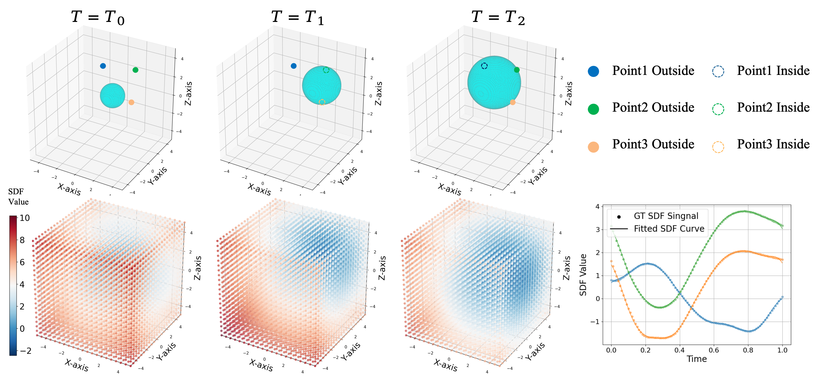

1Sun Yat-sen University
2Peking University
3Shandong University
4VAST
5Shenzhen Loop Area Institute
6Wangxuan Institute of Computer Technology, Peking University
7Beijing Academy of Artificial Intelligence
*Equal contribution †Corresponding authors
A parametric time-varying SDF for high-fidelity dynamic surface reconstruction.
Reconstructing high-fidelity surfaces of dynamic scenes remains a critical challenge. While current methods excel at novel view synthesis, they often struggle to recover accurate and stable geometry, particularly under large non-rigid deformations. This results in noisy meshes that are unsuitable for downstream simulation or editing.
In this work, we introduce a new paradigm for dynamic surface reconstruction based on a parametric Signed Distance Function (p-SDF). Our key insight is to generalize static SDF fields—where each spatial point stores a constant value—into time-dependent parametric curves where each curve models a temporally evolving SDF trajectory. This parametric SDF representation provides a principled way to capture complex temporal variations, naturally enforcing smoothness and continuity in shape dynamics.
At each timestamp, a static SDF field can be queried from p-SDF and converted into an explicit surface mesh via differentiable iso-surfacing. By rendering these meshes with a physically based differentiable renderer, we optimize the underlying parametric curves end-to-end against 2D image observations. Our framework produces high-fidelity surfaces and inherently disentangles geometry, material, and lighting from multi-view videos. It robustly reconstructs geometry under large-scale motions and resolves appearance ambiguities caused by lighting and occlusions.
Experiments on both synthetic and real-world scenes demonstrate that our method achieves state-of-the-art geometric accuracy.
As a dynamic scene evolves, the signed distance value at a fixed spatial location does not jump arbitrarily — it follows a smooth, continuous temporal trajectory. Per-frame or incremental methods ignore this structure and reconstruct each timestamp independently, accumulating error and producing temporally unstable, noisy meshes.
p-SDF models this temporal evolution directly with a compact parametric curve per spatial location. This makes shape dynamics smooth and continuous by construction, enables querying a consistent surface at any timestamp, and jointly disentangles geometry, material, and lighting for downstream editing such as relighting.

Pick any dataset and scene: compare all methods side by side, or drag to compare any two. Hover to play.
Gallery data could not be loaded. Serve this page over HTTP (e.g. python3 -m http.server) so gallery.json can be fetched.
p-SDF jointly recovers geometry, material, and lighting, enabling PBR decomposition and relighting. Below are p-SDF outputs for the selected scene. Hover a tile to play.
State-of-the-art geometric accuracy across three datasets, with competitive-to-best rendering quality.
SynMotion-360
1.157CD↓ · best geometry (2nd: 1.203)CMU Panoptic
0.026CD↓ · ≈40× below best baseline (1.041)DiVa-360
27.58PSNR↑ · best on all rendering metricsGeometry quality (mesh reconstruction)
| Method | SynMotion-360 | CMU Panoptic Studio | DiVa-360 | |||||||
|---|---|---|---|---|---|---|---|---|---|---|
| CD↓ | F1↑ | ECD↓ | EF1↑ | CD↓ | F1↑ | AR↓ | MA↓ | AR↓ | MA↓ | |
| Dynamic-2DGS | 2.104 | 0.754 | 3.802 | 0.494 | 2.000 | 0.762 | 22.656 | 12.435 | 23.156 | 12.830 |
| DG-Mesh | 2.957 | 0.661 | 4.740 | 0.438 | 1.041 | 0.788 | 22.508 | 12.894 | 22.829 | 13.207 |
| NeuS2 | 1.203 | 0.908 | 3.220 | 0.593 | 7.654 | 0.729 | 21.631 | 12.563 | 22.530 | 12.976 |
| AT-GS | 1.602 | 0.882 | 3.227 | 0.566 | 6.525 | 0.687 | 19.359 | 11.353 | 19.234 | 11.206 |
| Ours (p-SDF) | 1.157 | 0.893 | 3.170 | 0.596 | 0.026 | 0.896 | 4.983 | 0.678 | 3.126 | 0.396 |
Bold = best, underline = second best. CD / ECD / AR / MA — lower is better; F1 / EF1 — higher is better.
p-SDF achieves state-of-the-art geometric accuracy across all three datasets, with especially large margins on CMU Panoptic (CD 0.026 vs 1.041) and DiVa-360 mesh quality (AR 3.13 vs 19.23).
Rendering quality (novel view synthesis)
| Method | SynMotion-360 | DiVa-360 | ||||
|---|---|---|---|---|---|---|
| PSNR↑ | SSIM↑ | LPIPS↓ | PSNR↑ | SSIM↑ | LPIPS↓ | |
| Dynamic-2DGS | 29.489 | 0.959 | 0.062 | 17.513 | 0.910 | 0.187 |
| DG-Mesh | 25.719 | 0.936 | 0.081 | 17.734 | 0.919 | 0.183 |
| NeuS2 | 30.070 | 0.967 | 0.030 | 26.087 | 0.950 | 0.056 |
| AT-GS | 32.671 | 0.977 | 0.045 | 27.418 | 0.956 | 0.067 |
| Ours (p-SDF) | 32.153 | 0.974 | 0.028 | 27.584 | 0.957 | 0.049 |
Bold = best, underline = second best. PSNR / SSIM — higher is better; LPIPS — lower is better.
p-SDF is best on the real-world DiVa-360 across all rendering metrics, and best on LPIPS for SynMotion-360 while remaining competitive on PSNR / SSIM.
@inproceedings{gao2026psdf,
title = {Parametric SDF for Dynamic Surface Reconstruction},
author = {Gao, Chong and Ye, Kai and Dai, Qiyu and Shao, Yiming and Zeng, Qiong and Liang, Ding and Cao, Yan-Pei and Li, Guanbin and Chen, Wenzheng},
booktitle = {European Conference on Computer Vision (ECCV)},
year = {2026}
}